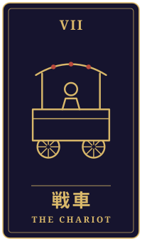
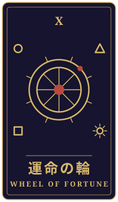

待ったなし
物語の手前に、ひとつの相談がありました。三枚のタロットをめぐるやりとりを、聞こえたままに書き留めています。
持ち込まれた相談
翻訳の仕事をひとりでしています。若いころ留学した国で戦争が続いていて、今朝、南の小さな町で一時的に戦闘が止まるというニュースを見ました。正直、ほっとするより先に、最近ニュースを避けていた自分に気づいてしまいました。生活のために、あの国と戦っている側の言葉の仕事も引き受けています。断ればいいのか、言葉に罪はないと割り切ればいいのか、ずっと決められません。昔お世話になった家族の娘さんから久しぶりに連絡が来たのに、何と返せばいいのか分からず、もう一週間そのままです。遠くにいる自分にできることがあるのか、それとも何をしても足りないのか。この先、どう向き合えばいいでしょうか。
タロットの読み解き

過去
戦車・逆位置
過去に置かれたのは、戦車の逆位置です。このカードは、勢いよく進もうとするあまり方向を見失う時期を示すことがあります。ニュースを避けてしまったご自身の姿にも、どこか気持ちが先へ先へと急いでいた名残が重なって見えるかもしれませんね。

現在
月・正位置
今は、月の正位置が出ています。月は、はっきりしない光の中で、何が本当なのかを見極めにくい状態を映すカードです。仕事を引くべきか、言葉に罪はないと割り切るべきか、答えが出ないのは、あなたの心がまだ見えていない部分を探しているからなのかもしれません。
月は夜道を照らす光でもあります。今は結論を急がず、迷いそのものを静かに眺める時期と受けとめてみてはどうでしょう。

未来
運命の輪・逆位置
未来には、運命の輪の逆位置が置かれました。流れが止まったり、タイミングがずれて空回りしたりする様子を表すカードです。娘さんへの返事が一週間止まっているのも、このカードの示す「ずれ」と重なって見えるかもしれません。
ただ、逆位置は止まっているからこそ、向きを変える余地が残っていると読むこともできます。
最後に
遠くにいるあなたに何ができるのか、それとも何をしても足りないのか。カードは、その問いに一つの答えを示すというより、まず自分の心の速度を少し緩めることを勧めているように感じます。今朝ほっとできなかった気持ちも、誰かを思う心がまだ確かにあることの表れではないでしょうか。
返事の言葉は、完璧でなくてもかまいません。「今すぐには言葉が見つからないけれど、あなたのことを忘れていません」という一行からでも、流れは少しずつ動き始めるかもしれません。仕事のことは、ご自身が大切にしてきた価値観に照らしながら、時間をかけて考えていけるとよいと思います。
帰り際の問い待つべき時期か、動くべき時期か。
読み解きは、タロット占い「月夜のアルカナ」が、この相談と引かれた三枚から返したものです。小説は同じ三枚を、別の角度から描いています。相談者は物語のための架空の人物です。相談文・読み解き・短編本文は、いずれも生成AIを使って制作しています。
物語に戻る